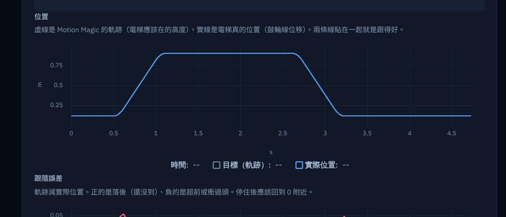

FEEDFORWARD × PID
FRC 9427
調整參數網站
給 FRC 程式組的前饋與 PID 學習網站
⚠ WARNING
kP 到底要填多少？
電梯停住後往下掉？
手臂到位後一直抖？
別再亂猜數字了。
先搞懂，再自己調好。
// 這個網站能做什麼
電梯・手臂・射球飛輪
計算CALC
模擬SIM
診斷DIAG
教學LEARN
01
網站去哪裡找？
// 瀏覽器打這個網址
或是用手機掃 QR Code ➜

手機・平板・電腦都能用
開過一次之後，沒網路也能用
OFFLINE READY · PWA
02
怎麼使用？
STEP 1 · 進站

STEP 1
按「開始」
STEP 2 · 選機構

STEP 2 · 選機構
電梯
直線上下
重力固定，kG 是常數
重力固定，kG 是常數
手臂
繞轉軸轉動
重力跟著 cos θ 變
重力跟著 cos θ 變
射球飛輪
控制轉速
連射撐不撐得住
連射撐不撐得住
STEP 3 · 往上走
網站像一棟樓
一層只做一件事
4F實機資料教學
3F模擬
2F調參建議
1F計算參數
G總覽
1F計算參數
INPUT · 機構資料

填入馬達、齒比、質量
OUTPUT · 參數卡

算出 kS kG kV kA kP
的起始值
的起始值
哪些能算、哪些一定要量，標得清清楚楚
3F模擬
TUNE · 親手調參數

拖滑桿
馬上看結果
馬上看結果
PLOT · 位置曲線

在模擬裡
撞壞也不怕
撞壞也不怕
理想模型、真實模型
（飽和、摩擦、延遲）可以逐項開關
（飽和、摩擦、延遲）可以逐項開關
4F實機資料教學
UNIT 0 · 安全須知

安全第一
→ 錄 .wpilog
→ SysId
→ 兩點法量 kS、kG
→ SysId
→ 兩點法量 kS、kG
2F調參建議
STEP 0 · 資料檢查

匯入 .wpilog
先檢查資料能不能用
先檢查資料能不能用
STEP 1 · 找出問題

照順序找出
第一個問題
第一個問題
一次只改一個參數
+射球飛輪
AIM · 選一條軌跡

給距離
選一條軌跡
選一條軌跡
→ 得到 rps 和砲台角度
→ 3F 連射看進不進
→ 3F 連射看進不進
03
建議的順序
// 電梯、手臂這樣走
1F算起始值
3F模擬練習
4F學錄資料
2F看日誌
GO上機驗證
不對？回 2F 再看下一步 ↺
// 卡住了？
點每一頁的「怎麼用這一頁？」
到「教學關卡」做檢核題
⚠ SAFETY
網站不連線機器人、不寫馬達參數
急停一律用 Driver Station
搞懂前饋與 PID
自己把機構調好。
FRC 9427
調整參數網站
vincent0926.github.io/
FRC-elevator-PID-Teaching-website/
FRC-elevator-PID-Teaching-website/
SCAN · 掃我打開
FRC9427 // TUNER.SYS
● REC T+00:00.00
BOOT
FEEDFORWARD × PID